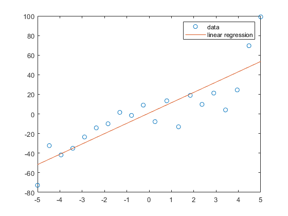

MAE107 HW6 Problem 3 Starter Script
clc clear close all % Import data_test.txt into script; make sure the txt file is located in % Matlab's current directory or in added path data = readmatrix('data_test.txt'); x = data(:,1); y = data(:,2); % Your code: % a) plot(x,y,'o'); hold on; % b) n = length(data); a1 = (n*sum(x.*y)-sum(x)*sum(y))/(n*sum(x.^2)-sum(x)^2) ybar = sum(y)/n; xbar = a1*sum(x)/n; a0 = ybar + xbar f = a0 + a1*x; plot(x,f); legend('data','linear regression') % c) sr = sum((y-a0-a1*x).^2); s = sqrt(sr/(n-2)) % d) st = sum((y-ybar).^2); r2 = (st-sr)/st
a1 =
10.5233
a0 =
0.9550
s =
18.9054
r2 =
0.7602
